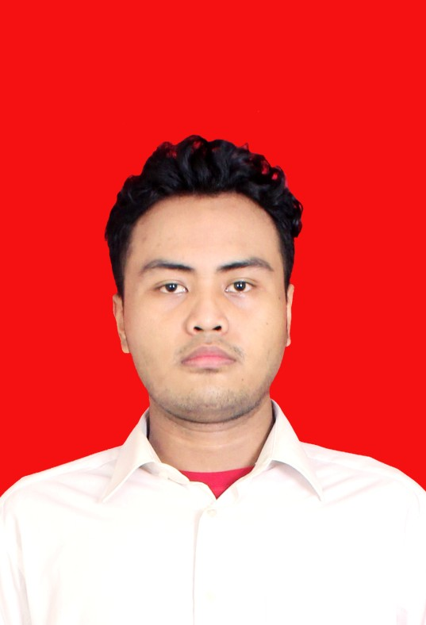

Tentang Saya
Profil Singkat

Saya lulusan SMA yang saat ini menempuh pendidikan S1 Teknik Informatika di Universitas PGRI Madiun.
Saya aktif di organisasi siswa selama dua tahun sebagai anggota OSIS Sekbid 9, dan pernah bekerja di bagian produksi sebuah perusahaan roti.
Keahlian
Desain grafis
- CorelDRAW
- Adobe Photoshop
- Adobe Illustrator
Aplikasi perkantoran
- Microsoft Office
- Microsoft PowerPoint
Fakta Singkat
- Domisili
- Samarinda, Kalimantan Timur
- Pendidikan saat ini
- S1 Teknik Informatika, Universitas PGRI Madiun (2024 - sekarang)
- Pendidikan sebelumnya
- SMAN 7 Samarinda (2017 - 2020)
- Pengalaman kerja
- Produksi (oven) di PT. Era Bakery, Samarinda (2020 - 2024)
- Organisasi
- Anggota Sekbid 9 OSIS (2017 - 2019)